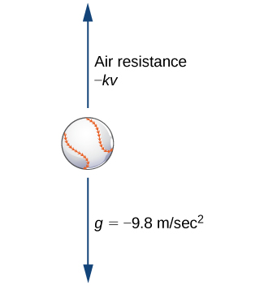

A differential equation of the form \(a(x)y' + b(x)y = c(x)\) is called a linear first-order differential equation. It’s called first-order because the highest derivative involved is \(y'\). It’s called linear because the powers of \(y\) and \(y'\) are both 1.
The standard form is:
To solve such an equation, we use the integrating factor method. This technique transforms the left-hand side into the derivative of a product, which we can then integrate easily.
Notice that if we multiply the expression \(y^\prime + p(x) y\) by an unknown function \(\mu(x)\), we end up with the expression \(\mu(x) y^\prime + (\mu(x) p(x)) y\).
Moreover, notice that the product rule for derivatives gives us \[(\mu(x) y)^\prime = \mu(x) y^\prime + \mu^\prime(x) y\]. That is, \(\mu(x) (y^\prime + p(x) y) = (\mu(x) y)^\prime\) if \(\mu^\prime(x) = \mu(x) p(x)\).
In other words, if we can solve the differential equation \(\mu^\prime = \mu p(x)\), and then multiply both sides by this factor we can simplify the differential equation to just \((\mu(x) y)^\prime = \mu(x) q(x)\).
We then can solve that by integrating and then solving for \(y\).
Note that we know how to find the function to find the function \(\mu(x)\) - we have to solve a separable differential equation \(\mu^\prime(x) = \mu(x) p(x)\). Remember, we know \(p(x)\( because it appears in the differential equation
we are solving
Separating variables and integrating yields \begin{align} \frac{\mu^\prime}{\mu}=p(x)\\ \int \frac{\mu^\prime}{\mu}dx =\int p(x)dx \\ \ln\mu(x)= \int p(x)dx\\ \mu(x)=e^{\int p(x)dx} \end{align}
Solve \(y' + 2y = 1\) with \(y(0) = 0\)
This equation is already in standard form. Here, \(p(x) = 2\), so:
\(\mu(x) = e^{\int 2\,dx} = e^{2x}\)
Multiply both sides by \(e^{2x}\):
\((e^{2x} y)' = e^{2x}\)
Integrate both sides:
\(e^{2x} y = \frac{1}{2} e^{2x} + C\)
Solve for \(y\):
\(y = \frac{1}{2} + Ce^{-2x}\)
Use the initial condition \(y(0) = 0\):
\(0 = \frac{1}{2} + C \Rightarrow C = -\frac{1}{2}\)
Final solution: \(y = \frac{1}{2} - \frac{1}{2}e^{-2x}\)
Physics application: air resistance.
A falling object experiences two forces:
Acceleration due to gravity: \(F_g = mg = 9.8m\) (assume downward is positive)
Air resistance (assume proportional to velocity): \(F_A = -kv\) (opposite direction)
Sum of forces = mass\(\cdot\) acceleration \(= m \frac{dv}{dt}\) (Second Newton’s Law)

From Section 4.5 of the textbook. We get a differential equation!
\(m\frac{dv}{dt} = 9.8m - kv\).
Exercise: A penny with weight 0.0025 kg is dropped from the top of the Empire State Building (369m). The force of air resistance on the penny is assumed to be about \(-.0025v\). Set up and solve a differential equation to find the formula for the velocity \(v(t)\) of the penny at time \(t\).
Set up the differential equation: \(0.0025 v^\prime = 9.8(0.0025) - 0.0025v\)
Simplify: \(v^\prime = 9.8 - v\)
Standard form: \(v^\prime + v = 9.8\) (linear first order equation!)
Initial condition: \(v(0)=0\)(dropped at rest)
Solve the equation using the steps listed above. Now that we have \(v(t)\):
What is the terminal velocity of the penny?
i.e. as \(t \rightarrow \infty\), what is \(v(t)\)?